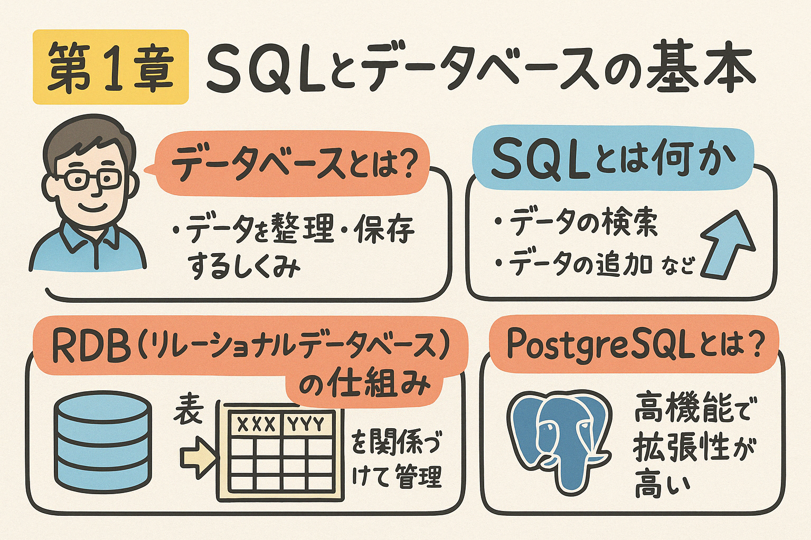

この第1章では、データベースの基本概念とSQLの役割について学習します。また、PostgreSQLの特徴や基本的な使い方についても解説します。この章を通じて、データベース管理システムの基礎と、効率的にデータを操作するためのSQLの基本を身につけることができます。
データベースはあらゆる現代アプリケーションの中核を成す技術です。この章では、データベースの基本概念からSQLの役割、そしてPostgreSQLの特徴まで、データベースの基礎を幅広く学びます。
データベースとは、構造化された形式でデータを保存し、効率的にアクセス、管理、更新するためのシステムです。日常生活のあらゆる場面で、私たちはデータベースの恩恵を受けています。例えば、銀行の口座情報、オンラインショッピングのカタログ、SNSの投稿など、大量のデータが整理された形で保存されています。
テーブル（行と列）の形式でデータを格納し、テーブル間の関係を定義します。SQL言語を使用してデータを操作します。
例: MySQL, PostgreSQL, Oracle, SQL Server など
非リレーショナルデータベースで、柔軟なスキーマを持ち、大量のデータや非構造化データの処理に適しています。
例: MongoDB, Cassandra, Redis など
データをオブジェクトとして表現し、オブジェクト指向プログラミングと親和性が高いデータベースです。
例: db4o, ObjectDB など
ノード（エンティティ）と関係（エッジ）を使用してデータを表現し、複雑な関係の分析に適しています。
例: Neo4j, Amazon Neptune など
ファイルシステムやスプレッドシートと比較したデータベースの利点：
リレーショナルデータベース（RDB）は、1970年代にE.F. Coddによって提案されたリレーショナルモデルに基づいています。このモデルでは、データはテーブル（関係）として表現され、テーブル間の関連付けによって複雑なデータ構造を表現します。
図1.1: リレーショナルデータベースの基本構造と関連
1つのレコードが別のテーブルの1つのレコードのみと関連付けられる関係。
例: 1人のユーザーに対して1つのプロフィール情報
1つのレコードが別のテーブルの複数のレコードと関連付けられる関係。
例: 1人の顧客に対して複数の注文
両方のテーブルのレコードが互いに複数のレコードと関連付けられる関係。通常は中間テーブルを使用して実現。
例: 学生と授業（一人の学生が複数の授業を受講、一つの授業に複数の学生が登録）
以下のシナリオに基づいて、簡単なデータベース設計を考えてみましょう：
オンライン書店のデータベース設計
オンライン書店では、複数の書籍を取り扱い、顧客は注文を行います。各書籍には著者がおり、一人の著者が複数の書籍を執筆することもあります。
ヒント: N:M関係（例: 著者と書籍の関係で、一冊の本が複数著者により執筆される場合）には中間テーブルの導入を検討しましょう。
SQL（Structured Query Language）は、リレーショナルデータベースの操作に使用される標準言語です。1970年代にIBMで開発され、現在ではほとんどのリレーショナルデータベースシステムで採用されています。SQLを使うことで、データの作成、読み取り、更新、削除（CRUD操作）を統一的な構文で行うことができます。
テーブルの作成（CREATE TABLE）
CREATE TABLE customers (
customer_id SERIAL PRIMARY KEY,
first_name VARCHAR(50) NOT NULL,
last_name VARCHAR(50) NOT NULL,
email VARCHAR(100) UNIQUE,
phone VARCHAR(20),
created_at TIMESTAMP DEFAULT CURRENT_TIMESTAMP
);
データの挿入（INSERT）
INSERT INTO customers (first_name, last_name, email, phone)
VALUES ('太郎', '山田', 'taro.yamada@example.com', '03-1234-5678');
データの検索（SELECT）
-- 全ての顧客データを取得
SELECT * FROM customers;
-- 特定条件の顧客を取得
SELECT customer_id, first_name, last_name
FROM customers
WHERE last_name = '山田'
ORDER BY first_name;
データの更新（UPDATE）
UPDATE customers
SET phone = '03-8765-4321'
WHERE customer_id = 1;
データの削除（DELETE）
DELETE FROM customers
WHERE customer_id = 1;
結合（JOIN）によるテーブル間の関連付け
SELECT c.first_name, c.last_name, o.order_date, o.total_amount
FROM customers c
JOIN orders o ON c.customer_id = o.customer_id
WHERE o.order_date >= '2023-01-01'
ORDER BY o.order_date DESC;
SQLは標準化されていますが、各データベースシステムには独自の拡張や方言があります。主な違いは:
これらの違いはありますが、基本的なSQL文法（SELECT、INSERT、UPDATE、DELETEなど）はほとんどのデータベースで共通しています。
以下の要件に基づいて、SQLコマンドを作成してみましょう：
PostgreSQL（通称「Postgres」）は、強力なオープンソースのオブジェクトリレーショナルデータベース管理システム（ORDBMS）です。1996年に最初のバージョンがリリースされ、現在も活発に開発が続けられています。高度な機能、拡張性、堅牢性を備えた企業向けデータベースとして世界中で広く使用されています。
SQLの標準仕様に広範囲に準拠しており、複雑なクエリやトランザクションをサポートしています。
トランザクションの原子性、一貫性、独立性、耐久性を完全にサポートし、データの整合性を保証します。
カスタムデータ型、関数、演算子を定義できるほか、多数のエクステンションで機能を拡張できます。
例: PostGIS（地理情報）, TimescaleDB（時系列データ）
標準的なデータ型に加え、JSON, XML, 配列, 範囲型, 幾何学データ型など、多様なデータ型をサポート。
マルチバージョン同時実行制御（MVCC）により、読み取り操作がブロックされることなく高い並行性を実現。
ロールベースのアクセス制御、列レベルのセキュリティ、行レベルのセキュリティなど、多層的なセキュリティ機能を提供。
| 特徴 | PostgreSQL | MySQL | Oracle | SQL Server |
|---|---|---|---|---|
| ライセンス | オープンソース (PostgreSQL License) | オープンソース (GPL) / 商用 | 商用 | 商用 |
| ACID準拠 | 完全 | InnoDB使用時のみ | 完全 | 完全 |
| SQL準拠 | 高い（標準に忠実） | 部分的 | 高い（独自拡張あり） | 高い（T-SQL方言） |
| カスタムデータ型 | 強力にサポート | 限定的 | サポート | サポート |
| JSONサポート | ネイティブ (JSONB) | 基本的なサポート | サポート | サポート |
| 地理空間データ | PostGIS（強力） | 基本的なサポート | Spatial | Spatial |
これらの企業・組織は、PostgreSQLの信頼性、機能性、拡張性を評価して採用しています。
実際にPostgreSQLを使用するために、まずはローカル環境にインストールしてみましょう。ここでは、主要なOSごとのインストール方法と、基本的な設定方法を説明します。また、管理ツールであるpgAdminの導入方法についても解説します。
Homebrewを使用する方法（推奨）
$ brew install postgresql
$ brew services start postgresql
公式インストーラを使用する方法
$ sudo apt update
$ sudo apt install postgresql postgresql-contrib
$ sudo systemctl start postgresql
$ sudo systemctl enable postgresql
pgAdminは、PostgreSQLデータベースを管理するための強力なグラフィカルインターフェースです。
Windowsの場合
PostgreSQLインストーラにpgAdminを含めることができます。別途インストールする場合は、pgAdmin公式サイトからダウンロードできます。
macOSの場合
$ brew install --cask pgadmin4
またはpgAdmin公式サイトからダウンロードします。
Linux（Ubuntu/Debian）の場合
$ sudo apt install pgadmin4
psql（コマンドラインツール）での接続
$ psql -U postgres
postgres=# \l -- データベース一覧の表示
postgres=# \c postgres -- postgresデータベースに接続
postgres=# \dt -- テーブル一覧の表示
postgres=# \q -- psqlの終了
pgAdminでの接続
psqlを使用する場合
-- データベースの作成
postgres=# CREATE DATABASE mydb;
-- 新しいデータベースに接続
postgres=# \c mydb
-- テーブルの作成
mydb=# CREATE TABLE users (
user_id SERIAL PRIMARY KEY,
username VARCHAR(50) UNIQUE NOT NULL,
email VARCHAR(100) UNIQUE NOT NULL,
created_at TIMESTAMP DEFAULT CURRENT_TIMESTAMP
);
-- データの挿入
mydb=# INSERT INTO users (username, email)
VALUES ('user1', 'user1@example.com');
-- データの確認
mydb=# SELECT * FROM users;
pgAdminを使用する場合
Dockerを使用すれば、ホストシステムに直接インストールせずにPostgreSQLを実行することができます。以下のコマンドでPostgreSQLコンテナを起動できます:
$ docker run --name postgres-db -e POSTGRES_PASSWORD=mysecretpassword -p 5432:5432 -d postgres
コンテナに接続するには:
$ docker exec -it postgres-db psql -U postgres
これにより、ローカル環境を汚さずにPostgreSQLを試すことができます。
PostgreSQLをインストールした後、以下の操作を行ってみましょう：
psqlまたはpgAdminを使用して、これらの操作を実行してみましょう。
以下の問題に答えて、第1章の内容の理解度を確認しましょう。
問題1: リレーショナルデータベースの基本構成要素として正しいものはどれですか？（複数選択可）
問題2: SQLの主な役割として、正しくないものはどれですか？
問題3: 以下のSQL文の中で、DML（データ操作言語）に分類されるものはどれですか？（複数選択可）
問題4: PostgreSQLの特徴として、正しくないものはどれですか？
問題5: 次のSQLコマンドの実行結果として、正しいものはどれですか？
CREATE TABLE products (
product_id SERIAL PRIMARY KEY,
name VARCHAR(100) NOT NULL,
price NUMERIC(10,2) NOT NULL DEFAULT 0,
stock INTEGER DEFAULT 0
);
INSERT INTO products (name, price, stock) VALUES ('ノートPC', 80000, 10);
INSERT INTO products (name, price) VALUES ('スマートフォン', 60000);
INSERT INTO products (name, stock) VALUES ('イヤホン', 5);
SELECT * FROM products WHERE price > 0;
この章では、データベースの基本概念、SQLの役割、そしてPostgreSQLの特徴と基本的な使い方について学びました。次の章では、より実践的なSQLの使い方に焦点を当て、データの取得と操作のための様々なSQL文について学んでいきます。
練習問題に取り組み、実際にPostgreSQLを操作することで、この章で学んだ概念をしっかりと身につけましょう。
以下のミニプロジェクトに取り組んで、SQLとPostgreSQLの基本的な操作を実践してみましょう：